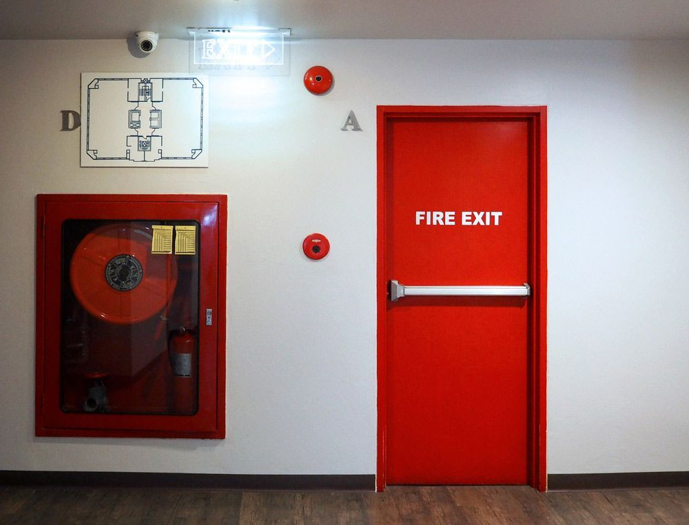

On this page
AT A GLANCE
Fire doors and fire exits are critical components of any building's fire protection and safety plan. Retail and trade customers can buy over the counter at our Bundall (Gold Coast) and Ballina showrooms.
Reliable Fire Door Hardware

Fire doors and fire exits are critical components of any building's fire protection and safety plan. They are specially designed to withstand flames and prevent the spread of smoke, giving occupants more time to evacuate safely in the event of a fire. However, installing fire doors alone is not enough; they also require compatible hardware to meet building code requirements.
At SPL Security Solutions, we stock a large selection of fire door hardware ready for next-day delivery. Our range includes hinges, seals, door closers, handle sets, lock sets and much more from top brands, such as Lockwood, Dorma and Ingersoll Rand. Each product complies with the latest safety standards and regulations, ensuring peace of mind.
Whether you're looking to upgrade existing fire doors or require new hardware for a construction project, call (07) 55 888 111. We also supply closers, seals and levers throughout the Gold Coast, Brisbane and Northern NSW.
Service Areas
SPL Security Gold Coast
The Gold Coast is serviced from our Bundall office.
Gold Coast showroomSPL Security Brisbane
Brisbane is serviced from our Gold Coast office.
Gold Coast showroomSPL Security Northern NSW
Northern NSW is serviced from our Ballina showroom.
Ballina showroom
Fire door compliance in Australia
Under the National Construction Code (NCC), a required fire door must comply with AS 1905.1, the Australian Standard for fire-resistant doorsets. The Standard treats a fire door as a complete doorset, with the leaf, frame, hardware, seals and installation tested and relied on together, so replacement locks, latches, closers and hinges need to suit the tested doorset.
- Self-closing and self-latching: fire doorsets must close by themselves and, other than sliding doors, latch shut. Where a door is held open, it must close automatically when smoke detectors activate and close if the power fails.
- Compliance tags: fire doors and frames carry permanent identification tags. Don't paint over or remove them, as a missing or unreadable tag can mean the door can't be verified as compliant.
- Routine servicing: AS 1851 sets out routine servicing of fire protection systems, including fire and smoke doors.
Requirements depend on the building and its approval, so check with your building certifier or fire safety adviser. Talk to our team about the fire door hardware you need.
Fire door FAQs
Which Australian Standard applies to fire doors?
Under the National Construction Code, a required fire door must comply with AS 1905.1, the Australian Standard for fire-resistant doorsets. The doorset is tested as a whole, so the leaf, frame, hardware and seals all form part of its fire rating.
Do fire doors have to self-close and latch?
Yes. AS 1905.1 requires fire doorsets to be self-closing and, other than sliding doorsets, self-latching. Where the NCC allows a door to be held open, it must close automatically when smoke detectors activate and close if the power fails.
How often should fire doors be checked?
AS 1851 sets out routine servicing of fire and smoke doors. Hinged fire doors are generally inspected six-monthly and annually, while sliding fire doors need more frequent checks.
Visit our trade counter
Retail and trade customers are welcome at our trade counter at 101 Ashmore Rd, Bundall (Gold Coast), Monday–Friday, 7:00 am–4:30 pm, or at our Ballina showroom, Unit 2/269 River Street, Ballina, Monday–Friday, 8:00 am–5:00 pm. Products can be ordered through either location. Call (07) 55 888 111 or send us an enquiry.